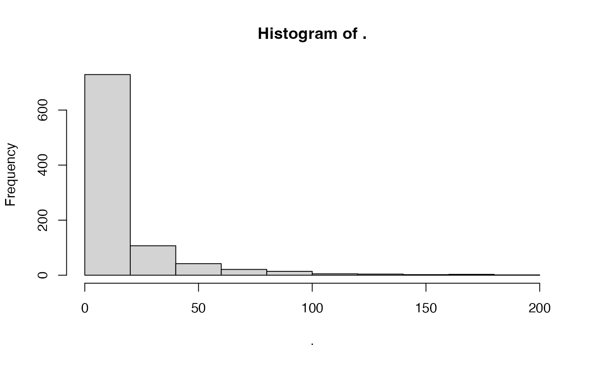

Fit and validate Random Forest models with exploration of hyper-parameters that optimize performance
Source:R/tune_abund_qrf.R
tune_abund_qrf.RdFit and validate Random Forest models with exploration of hyper-parameters that optimize performance
Usage
tune_abund_qrf(
data,
response,
predictors,
predictors_f = NULL,
fit_formula = NULL,
partition,
predict_part = FALSE,
framework = "quantregForest",
train_quantiles = c(0.5),
eval_quantile = 0.5,
grid = NULL,
metrics = NULL,
n_cores = 1,
verbose = TRUE
)Arguments
- data
tibble or data.frame. Database with response, predictors, and partition values
- response
character. Column name with species abundance.
- predictors
character. Vector with the column names of quantitative predictor variables (i.e. continuous variables). Usage predictors = c("temp", "precipt", "sand")
- predictors_f
character. Vector with the column names of qualitative predictor variables (i.e. ordinal or nominal variables type). Usage predictors_f = c("landform")
- fit_formula
formula. A formula object with response and predictor variables (e.g. formula(abund ~ temp + precipt + sand + landform)). Note that the variables used here must be consistent with those used in response, predictors, and predictors_f arguments. Default NULL
- partition
character. Column name with training and validation partition groups.
- predict_part
logical. Save predicted abundance for testing data. Default = FALSE
- framework
character. Package used to fit the quantile random forest, either "quantregForest" (default) or "grf"
- train_quantiles
numeric. Vector of quantiles estimated during training. Default 0.5
- eval_quantile
numeric. Quantile used to evaluate the model. It is added to
train_quantilesif absent. Default 0.5- grid
tibble or data.frame. A dataframe with "mtry" and "ntree" as columns and its values combinations as rows. If no grid is provided, function will create a default grid combining the next hyperparameters: mtry = seq(2, length(predictors), by = 1), ntree = seq(500, 1000, by = 100). In case one or more hyperparameters are provided, the function will complete the grid with the default values.
- metrics
character. Vector with one or more metrics from c("corr_spear","corr_pear","mae","pdisp","inter","slope").
- n_cores
numeric. Number of cores used in parallel processing.
- verbose
logical. If FALSE, disables all console messages. Default TRUE
Value
A list object with:
model: A "randomForest" class object from randomForest package. This object can be used for predicting.
predictors: A tibble with quantitative (c column names) and qualitative (f column names) variables use for modeling.
performance: A tibble with selected model's performance metrics calculated in adm_eval.
performance_part: A tibble with performance metrics for each test partition.
predicted_part: A tibble with predicted abundance for each test partition.
optimal_combination: A tibble with the selected hyperparameter combination and its performance.
all_combinations: A tibble with all hyperparameters combinations and its performance.
Examples
# \donttest{
require(dplyr)
# Database with species abundance and x and y coordinates
data("sppabund")
# Select data for a single species
some_sp <- sppabund %>%
dplyr::filter(species == "Species two") %>%
dplyr::select(-.part2, -.part3)
# Explore response variables
some_sp$ind_ha %>% range()
#> [1] 0.0000 186.8627
some_sp$ind_ha %>% hist()

# Here we balance number of absences
some_sp <-
balance_dataset(some_sp, response = "ind_ha", absence_ratio = 0.2)
# A small subset keeps this example fast
set.seed(1)
some_sp <- some_sp[sort(sample(nrow(some_sp), 200)), ]
# Create a grid
raf_grid <- expand.grid(
mtry = 2:3,
ntree = c(50, 100),
stringsAsFactors = FALSE
)
# Tune a RAF model
tuned_raf <- tune_abund_raf(
data = some_sp,
response = "ind_ha",
predictors = c("bio12", "elevation", "sand"),
predictors_f = c("eco"),
partition = ".part1",
predict_part = TRUE,
metrics = c("corr_pear", "mae"),
grid = raf_grid,
n_cores = 1
)
#> Using provided grid.
#> Searching for optimal hyperparameters...
#>
#> Fitting the best model...
#> Formula used for model fitting:
#> ind_ha ~ bio12 + elevation + sand + eco
#> Replica number: 1/1
#> -- Partition number 1/3
#> -- Partition number 2/3
#> -- Partition number 3/3
#> The best model was achieved with:
#> mtry = 2 and ntree = 100
tuned_raf
#> $model
#>
#> Call:
#> randomForest(formula = formula1, data = data, mtry = mtry, ntree = ntree, importance = FALSE)
#> Type of random forest: regression
#> Number of trees: 100
#> No. of variables tried at each split: 2
#>
#> Mean of squared residuals: 711.4146
#> % Var explained: 6.65
#>
#> $predictors
#> # A tibble: 1 × 6
#> model response c1 c2 c3 f
#> <chr> <chr> <chr> <chr> <chr> <chr>
#> 1 raf ind_ha bio12 elevation sand eco
#>
#> $performance
#> # A tibble: 1 × 13
#> model mae_mean mae_sd corr_spear_mean corr_spear_sd corr_pear_mean
#> <chr> <dbl> <dbl> <dbl> <dbl> <dbl>
#> 1 raf 19.0 1.08 0.417 0.0564 0.324
#> # ℹ 7 more variables: corr_pear_sd <dbl>, inter_mean <dbl>, inter_sd <dbl>,
#> # slope_mean <dbl>, slope_sd <dbl>, pdisp_mean <dbl>, pdisp_sd <dbl>
#>
#> $performance_part
#> # A tibble: 3 × 9
#> replica partition model mae corr_spear corr_pear inter slope pdisp
#> <chr> <chr> <chr> <dbl> <dbl> <dbl> <dbl> <dbl> <dbl>
#> 1 1 1 raf 17.7 0.482 0.393 5.65 0.515 0.763
#> 2 1 2 raf 19.4 0.384 0.217 11.6 0.655 0.331
#> 3 1 3 raf 19.8 0.384 0.362 2.28 1.06 0.341
#>
#> $predicted_part
#> # A tibble: 200 × 4
#> replica partition observed predicted
#> <chr> <chr> <dbl> <dbl>
#> 1 1 1 50 37.4
#> 2 1 1 30 39.0
#> 3 1 1 10 6.05
#> 4 1 1 10 17.1
#> 5 1 1 10 22.6
#> 6 1 1 10 37.4
#> 7 1 1 40 37.5
#> 8 1 1 10 28.0
#> 9 1 1 50 47.6
#> 10 1 1 20 32.2
#> # ℹ 190 more rows
#>
#> $metadata
#> $metadata$plataform
#> [1] "aarch64-apple-darwin23"
#>
#> $metadata$R_version
#> [1] "R version 4.6.1 (2026-06-24)"
#>
#> $metadata$run_date
#> [1] "2026-10-21 13:40:32 PDT"
#>
#> $metadata$formula
#> ind_ha ~ bio12 + elevation + sand + eco
#> <environment: 0x6ed1b8cf0>
#>
#> $metadata$importance
#> [1] FALSE
#>
#> $metadata$hyperparameters
#> $metadata$hyperparameters$mtry
#> [1] 2
#>
#> $metadata$hyperparameters$ntree
#> [1] 100
#>
#>
#> $metadata$source_function
#> [1] "tune_abund_raf"
#>
#>
#> $optimal_combination
#> comb_id mtry ntree model mae_mean mae_sd corr_spear_mean corr_spear_sd
#> 3 comb_3 2 100 raf 18.76909 0.7993158 0.4458167 0.03349776
#> corr_pear_mean corr_pear_sd inter_mean inter_sd slope_mean slope_sd
#> 3 0.3350354 0.105214 5.759604 6.583436 0.7847921 0.3855746
#> pdisp_mean pdisp_sd
#> 3 0.4748684 0.2316399
#>
#> $all_combinations
#> comb_id mtry ntree model mae_mean mae_sd corr_spear_mean corr_spear_sd
#> 1 comb_1 2 50 raf 19.26100 1.3681639 0.4046738 0.08951820
#> 2 comb_2 3 50 raf 19.39064 1.2000367 0.3952511 0.08961532
#> 3 comb_3 2 100 raf 18.76909 0.7993158 0.4458167 0.03349776
#> 4 comb_4 3 100 raf 19.38789 0.6643031 0.3843765 0.05248941
#> corr_pear_mean corr_pear_sd inter_mean inter_sd slope_mean slope_sd
#> 1 0.3024981 0.13247969 8.648245 6.613269 0.6457515 0.2655482
#> 2 0.2819099 0.16766883 10.377227 9.203270 0.5735037 0.3789925
#> 3 0.3350354 0.10521400 5.759604 6.583436 0.7847921 0.3855746
#> 4 0.2850020 0.09929341 9.193333 5.652606 0.6397991 0.3231810
#> pdisp_mean pdisp_sd
#> 1 0.4903483 0.2377194
#> 2 0.5186878 0.2670019
#> 3 0.4748684 0.2316399
#> 4 0.5065304 0.2916268
#>
# }